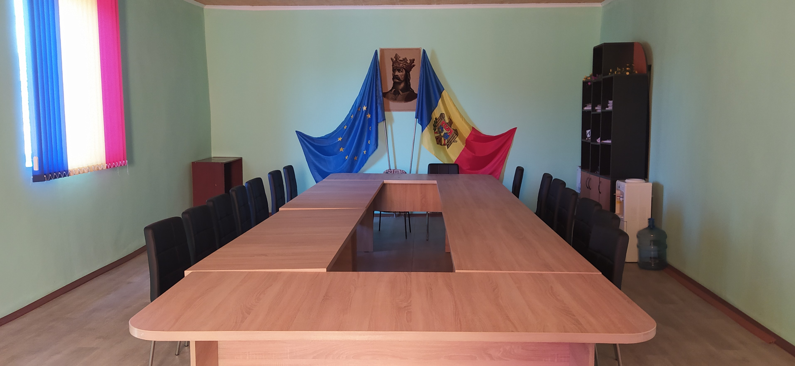

Lista consilierilor
- Nicu Vladimir
- Racoviță Pintilie
- Racoviță Vasile
- Știrbu Elena
- Zlati Nadejda
- Cantea Rodica
- Parfeni Maria
- Vicol Alexandru
- Zanet Mihail
- Stoianov Afanasie
- Butuc Nina

Planul anual de acțiuni al primăriei comunei Enichioi pentru anul 2023
- Asigurarea organizării și desfășurării optime a 4 ședințe ordinare ale Consiliului în termenele stabilite, prin înștiințarea convocării Consiliului local conform procedurii legale, pregătirea tuturor materialelor necesare dezbaterii problemelor în Consiliu și avizarea proiectelor de decizii ale Consiliului local în termeni legali și conform procedurii legale.
- Monitorizarea realizării tuturor deciziilor Consiliului local întocmai și în termenii stabiliți.
- Asigurarea transparenței procesului decizional.
- Acordarea asistenței metodologice și consultative consilierilor și comisiilor de specialitate ale Consiliului local, acordarea asistenței informaționale tuturor cetățenilor care s-au adresat.
- Asigurarea legalității actelor adoptate de către Consiliul comunal Enichioi.
- Asigurarea și organizarea ținerii continue a contabilității.
- Controlul asupra utilizării corecte și cu economie a mijloacelor financiare.
- Efectuarea inventarierii patrimoniului instituțiilor.
- Întocmirea și prezentarea rapoartelor trimestriale și anuale.
- Dirijarea procesului de reglementare a regimului proprietății funciare.
- Promovarea Programului de valorificare și sporire a fertilității terenurilor.
- Asigurarea accesului populației la servicii sociale de calitate.
- Inițierea, amenajarea și salubrizarea localităților din comuna Enichioi.
- Examinează cererile și consultă cetățeni.